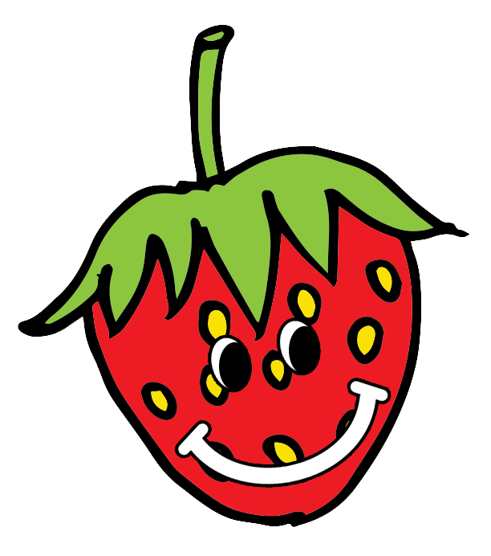

SondageBerry
Accueil
Se Connecter
Sondages
Informations
1# Quelle est votre couleur préférée ?
Répondre à ce sondage
1# Quel est votre sport préféré ?
Répondre à ce sondage
1# Quel est votre plat préféré ?
Répondre à ce sondage